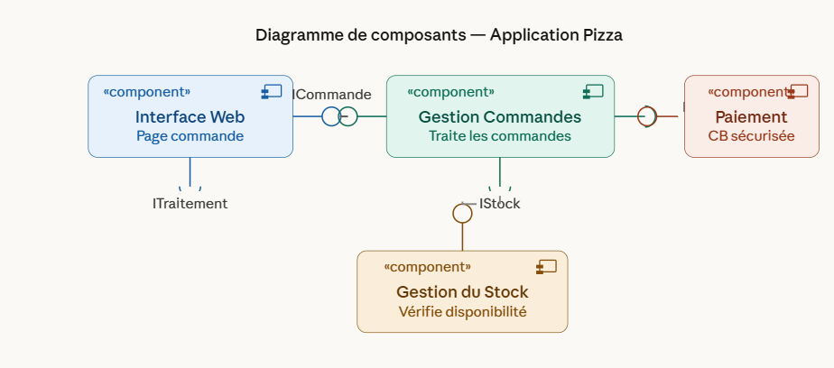
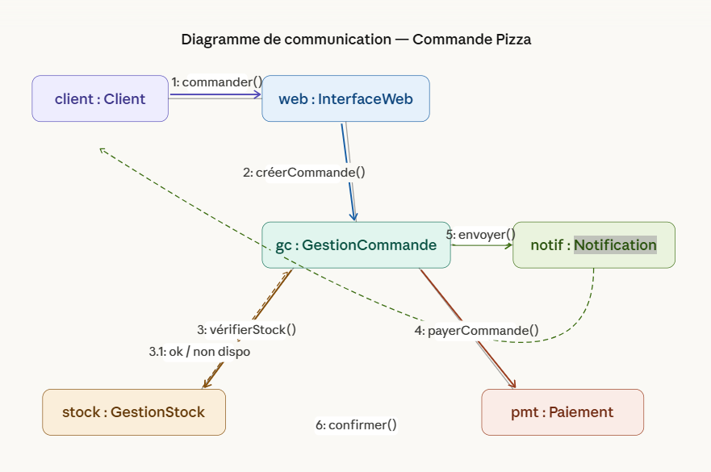

Diagramme de Composants et Communication
Une approche UML pour la modélisation logicielle
Introduction
Qu'est ce que l'UML ?
Un langage visuel pour représenter, concevoir et documenter des systèmes logiciels.
Dans cet exposé, nous allons nous concentrer sur :
- Le diagramme de composants
- Le diagramme de communication

Plan de la Présentation
Utilisation
Diagramme de ComposantsObjectifs 🎯
- Définir les aspects exécutables et réutilisables d'un système.
- Identifier les problèmes de configuration via les interfaces.
- Représentation précise du système avant modifications.
- Planifier les modules d'un nouveau projet.
Exemple Pratique 🏫
Dans une application de gestion d'école, on peut avoir :
- Un composant pour la Gestion des étudiants.
- Un composant pour la Gestion des notes.
- Un composant pour les Emplois du temps.
Chaque module fonctionne indépendamment mais communique via des interfaces.
Utilisation
Diagramme de CommunicationObjectifs 🎯
- Décrire le comportement dynamique du système.
- Visualiser le flux des messages entre les objets.
- Vérifier si le système peut réaliser une fonctionnalité spécifique.
- Identifier les méthodes nécessaires pour chaque classe.
Applications 📱
Il est utilisé pour modéliser des interactions complexes où l'ordre des messages est crucial.
Contrairement au diagramme de séquence, il met l'accent sur l'organisation des objets plutôt que sur le temps.
Structure : Composants 🏗️
Les éléments principaux qui constituent le diagramme :
Composant
Unité autonome du système.
Interface Fournie
Services offerts par le composant.
Interface Requise
Services nécessaires au composant.
Connecteur
Lien entre deux composants.
Port
Point d'interaction du composant.
Dépendance
Relation entre éléments.
Structure : Communication 💬
Les composants de base pour illustrer les interactions :
Objets et Liens
Les rectangles représentent les objets (instances de classes) et les lignes les chemins de communication.
Messages et Séquences
Les messages sont numérotés pour indiquer l'ordre chronologique des appels.
Étude de Cas
Système de Commande en Ligne 🛒Le processus métier :
Le client passe une commande via l'interface web.
Le système vérifie la disponibilité dans le stock.
Le paiement est traité par un service externe.
Une confirmation est envoyée au client par email.
Étude de Cas
Diagramme de Composants 🏗️Interface Web
Fournit
L'interface utilisateur pour naviguer et passer la commande.
Gestion des Commandes
Traite
Le cœur du système qui coordonne les actions de vente.
Gestion du Stock
Vérifie
Interagit avec la base de données pour la disponibilité.
Service de Paiement
Sécurise
Module externe pour valider les transactions financières.
Notification
Envoie
Gère l'envoi automatique de l'email de confirmation au client.
Étude de Cas
Diagramme de Communication 💬Client vers Interface Web
1 : SaisirCommande(produit)
L'utilisateur initie l'action via le navigateur.
Interface vers Gestionnaire
2 : CreerCommande(produit)
Transmission des données au cœur logistique.
Gestionnaire vers Stock
3 : VerifierStock(produit)
Requête de disponibilité de l'article.
Gestionnaire vers Paiement
4 : TraiterPaiement(montant)
Appel au service bancaire sécurisé.
Gestionnaire vers Notification
5 : EnvoyerConfirmation()
Demande de création de l'email.
Notification vers Client
6 : EnvoyerEmail()
L'email de confirmation arrive chez le client.
La numérotation séquentielle montre clairement l'ordre d'exécution.
Conclusion 🏁
Visibilité : Une vue claire de l'architecture logicielle.
Communication : Un langage commun pour les équipes.
Qualité : Réduction des erreurs de conception.

Diagramme de composants

Diagramme de communication